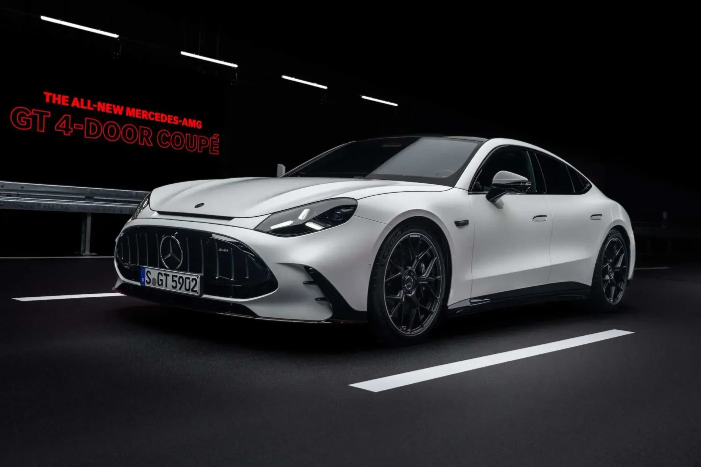
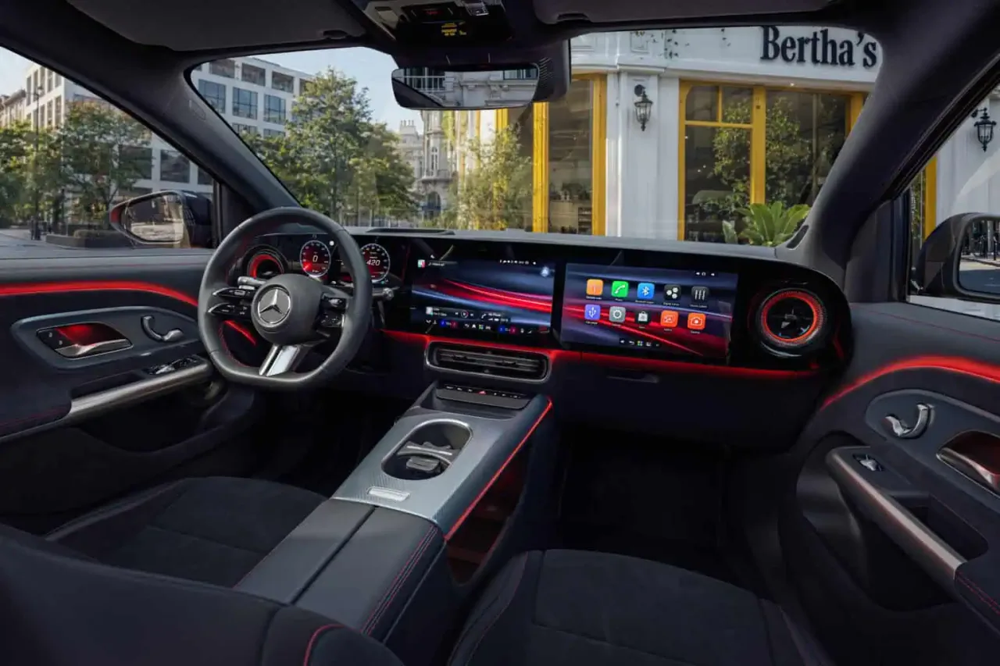
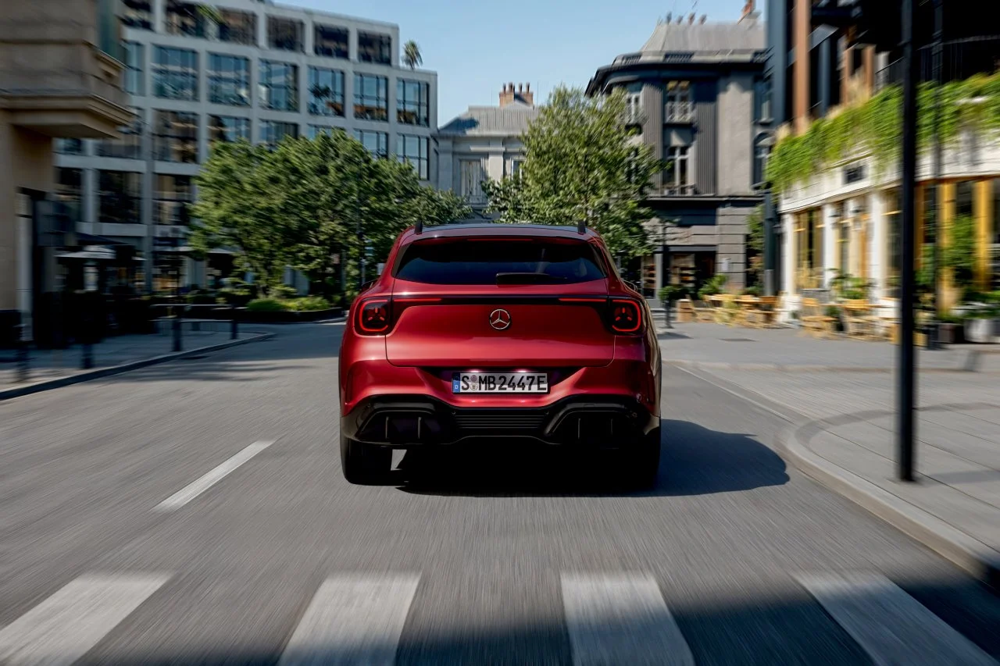
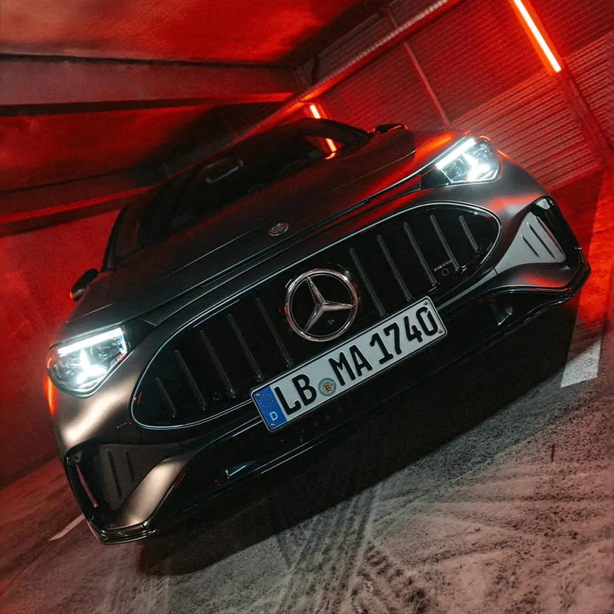
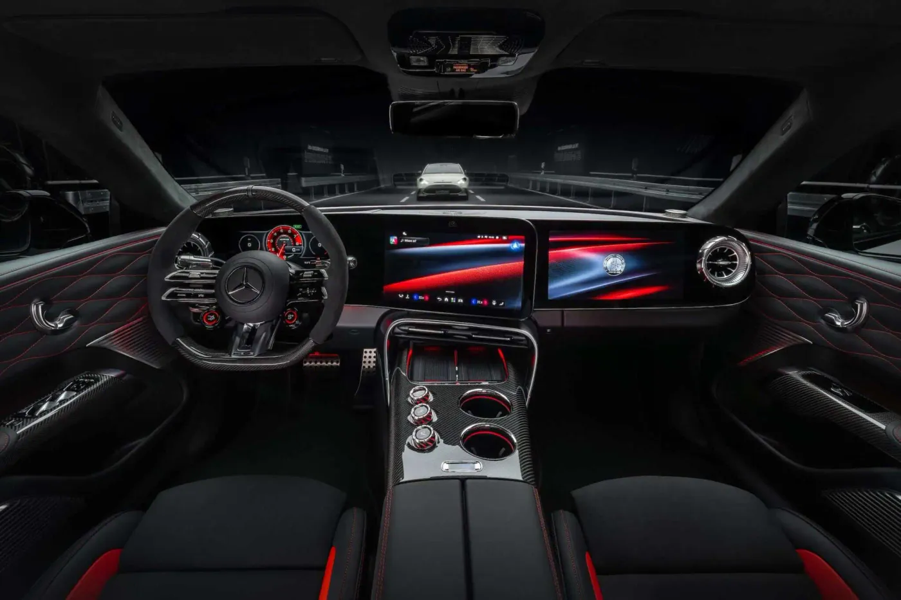
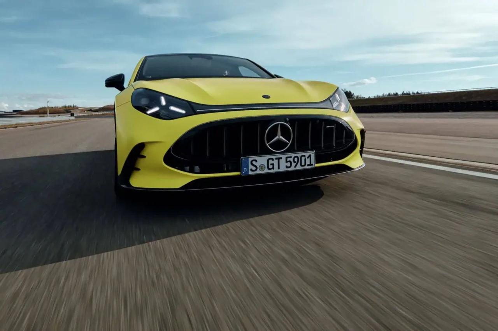
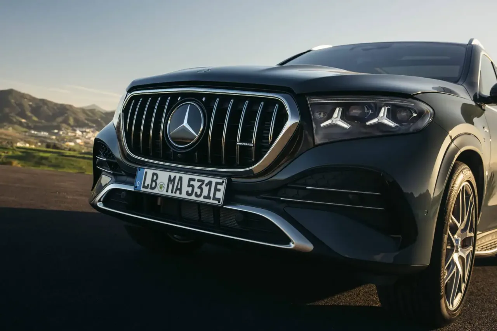
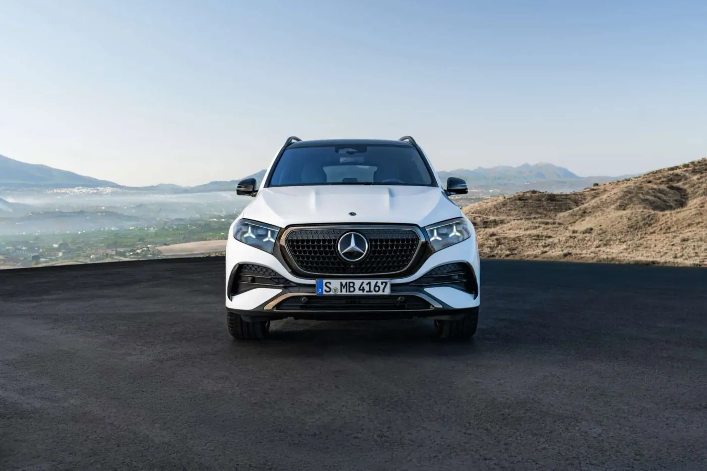
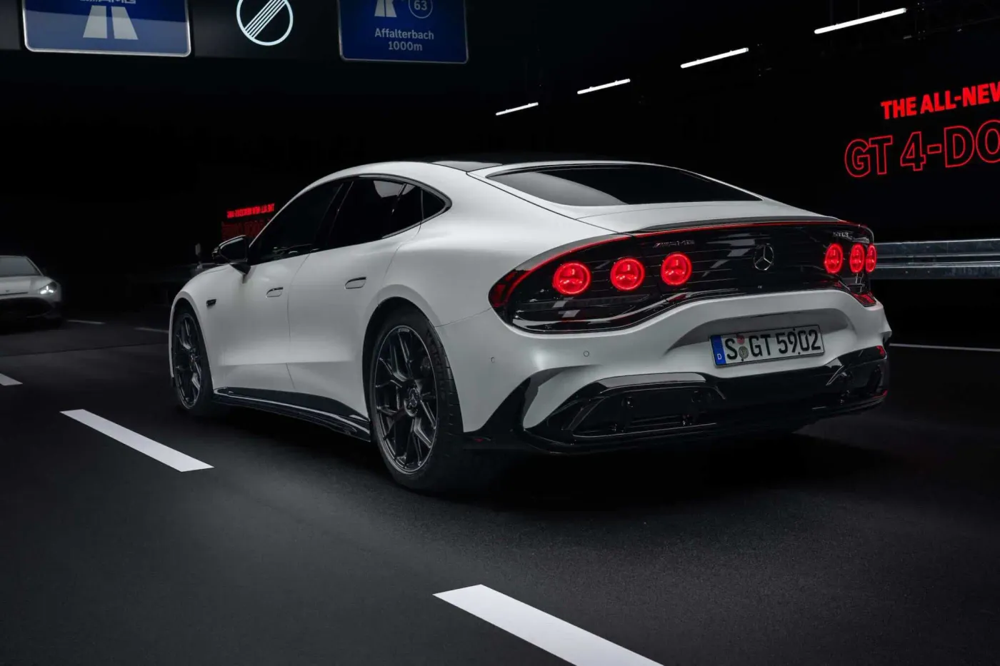

▲ 메르세데스-AMG GT 4도어 쿠페(GT 55). 5월 20일 공개됐으며 이번 파리모터쇼 메르세데스 부스의 간판 모델이다 ⓒ Mercedes-AMG(Mondial de l’Auto 게재)
"월드 프리미어"라는 단어는 모터쇼에서 가장 무겁게 쓰이는 말인데, 벤츠는 이번 파리에서 그 단어를 꽤 후하게 쓰고 있다.
메르세데스-벤츠는 10월 12일부터 18일까지 파리 포르트 드 베르사유에서 열리는 2026 파리모터쇼(제91회 몽디알 드 로토)에서 신형 GLA, 메르세데스-AMG CLA 45 전기 쿠페, GLE 부분변경, 메르세데스-AMG GT 4도어 쿠페 등을 월드 프리미어로 선보인다고 예고했다. 이 목록에는 신형 VLE 전기 밴과 S클래스 부분변경까지 합쳐 총 6종이 올라 있다. 그런데 독일 벤츠 전문 매체 MBpassion은 "파리에서 메르세데스의 월드 프리미어는 없다"고 못 박았다. 어느 쪽이 맞을까. 모델별로 실제 공개 시점과 제원을 확인했다.
1. 이번 파리모터쇼에서 벤츠는 무엇을 내세우나
벤츠의 파리 부스 주제는 단연 전기차다. 오토 익스프레스는 이번 쇼를 "신차 공개가 풍성한 행사"로 소개하며 벤츠가 CLA·VLE·GLC·GLB·GLA 그리고 플래그십 전기 퍼포먼스카 AMG GT 4도어를 가져온다고 전했다. 파리모터쇼 공식 사이트는 신형 GLA·GLB·GLC·AMG GT 4도어를 앞세운 부스라고 소개하면서, 800V 전기 시스템이 CLA·GLA·GLB·GLC·VLE·AMG GT 4도어를 관통하는 기술 키워드라고 짚었다.
벤츠는 올해가 카를 벤츠의 1886년 특허 자동차 발명 이후 140주년이라는 점도 내세운다. 부스에는 에이클래스 '에디션 140' 한정 시리즈가 함께 놓인다. 몽디알 측은 벤츠가 "140 Years, 140 Places"라는 국제 투어를 진행 중이라고 전했다.
| 구분 | 모델 | 비고 |
|---|---|---|
| 월드 프리미어로 예고 | 신형 GLA, AMG CLA 45 전기 쿠페, GLE 부분변경, AMG GT 4도어, VLE 전기 밴, S클래스 부분변경 | Mercedes Blog 기준. 사용자 요청 4종은 이 중 앞의 4개 |
| 함께 전시 | C클래스 일렉트릭, GLC 일렉트릭, 에이클래스 에디션 140 | 이미 공개된 모델로 분류 |
| 소문 단계 | AMG CLE 646 한정판(V8) | Auto Express는 "실물로 볼 수 있다"고 소개, MBpassion은 공식 확정이 아니라고 구분 |
📍 "월드 프리미어" 표기가 매체마다 다른 이유
Mercedes Blog와 Auto Express는 벤츠 측 예고를 근거로 4종을 신차 공개로 분류했다. 반면 MBpassion은 "파리에서 메르세데스의 월드 프리미어는 없다"며 부스를 "이미 본 차들의 재방송"에 가깝다고 평가했다. 확인 가능한 공개 시점을 보면 후자의 지적이 사실에 가깝다. 다만 일반 관람객이 실차를 처음 보는 유럽 대중 공개라는 의미는 분명 있다.

▲ 신형 GLA 일렉트릭. 7월 말 공개돼 파리에서 처음 대중에게 실물이 전시된다 ⓒ Mercedes-Benz
2. 신형 GLA — 전기차로 먼저, 657km
신형 GLA는 7월 30일 공개됐고, 주문도 같은 날 시작됐다. 몽디알 파리 보도 기준 첫 출시 라인업은 3종이며, 전기차 인도는 2026년 11월 시작된다. 2027년 초에는 71kWh 배터리 사양과 48V 하이브리드(1.5ℓ 터보+22kW 모터)가 추가된다.
| 모델 | 출력 | 배터리 | 주행거리 | 프랑스 가격 | 독일 가격 |
|---|---|---|---|---|---|
| GLA 200 | 165kW(224마력) | 58kWh LFP | 445km | 4만 4,400유로 | 4만 8,600유로 |
| GLA 250+ | 200kW(272마력) | 85kWh NMC | 657km | 5만 700유로 | 5만 4,978유로 |
| GLA 350 4MATIC | 260kW(354마력) | 85kWh NMC | 642km | 5만 4,700유로 | 5만 8,108유로 |
800V 구조 덕분에 최대 320kW 급속충전이 가능하고, 10분 충전으로 약 270km를 달릴 수 있다고 한다. 차체는 전 세대보다 14.3cm 길어진 4.565m이며 휠베이스는 61mm 늘었다. 적재공간은 410ℓ(2열 폴딩 시 1,400ℓ), 전기차 사양에는 107ℓ 프렁크가 추가된다. 주행거리는 모두 WLTP 기준이다. 최상위 GLA 350 4MATIC의 0→100km/h는 5.4초다. 프랑스와 독일의 가격 차이는 세금·옵션 구성이 달라서 생기는 것으로 보이며(추정), 한국 가격과는 직접 비교할 수 없다. 프랑스에서는 GLA 200이 4만 7,000유로 미만이라 환경 보너스 대상이라는 보도가 있다. 인도는 11월 시작이며, 파리에서 일반 관람객이 실차를 처음 볼 수 있다는 점이 이번 전시의 의미다.
✅ GLA에서 확인할 것
· 국내 출시 시기 — 유럽 인도는 11월이지만 벤츠코리아의 GLA 일렉트릭 국내 출시 일정과 가격은 이번 조사에서 확인되지 않았다
· 한국 인증 주행거리 — 657km는 WLTP 수치이므로 국내 환경부 인증에서는 다르게 나온다

▲ 신형 GLA 실내. 와이드 MBUX 슈퍼스크린이 적용된 사양이다 ⓒ Mercedes-Benz(Mondial de l’Auto 게재)

▲ 신형 GLA 일렉트릭 후면. 14.3cm 늘어난 전장과 일체형 리어램프가 눈에 띈다 ⓒ Mercedes-Benz
3. AMG CLA 45 — 680PS 첫 AMG 소형 전기차
AMG CLA 45 4MATIC+는 이름은 같아도 완전히 다른 차다. 이전 CLA 45가 2.0ℓ 터보 엔진이었다면 이번엔 축방향 자속 모터 3개(앞 1개·뒤 2개)로 최대 500kW(680PS), 1,759Nm를 낸다. 0→100km/h는 2.7초(굿우드는 미국식 롤아웃을 뺀 일반 측정으로는 3.0초라고 설명)이며, 최고속도는 시속 155마일(약 250km/h)로 제한된다. 옵션 'AMG 다이내믹 플러스 패키지'를 고르면 167마일(약 269km/h)까지 올라간다. 7월 11일 영국 굿우드 페스티벌 오브 스피드에서 F1 드라이버 키미 안토넬리가 공개했다.
| 항목 | 내용 |
|---|---|
| 모터 | 축방향 자속 모터 3개(앞 1·뒤 2) |
| 최고 출력·토크 | 500kW(680PS) / 1,759Nm |
| 0→100km/h | 2.7초(롤아웃 기준) / 일반 측정 3.0초 |
| 배터리 | 94kWh(실사용), 최대 충전 330kW, 10→80% 22분 |
| WLTP 주행거리 | 세단 670km 이상 / 슈팅 브레이크 640km |
| WLTP 전비 | 세단 16.1~18.4kWh/100km, 슈팅 브레이크 17.4~19.1kWh/100km |
| 오스트리아 가격 | 세단 7만 8,790유로 / 슈팅 브레이크 7만 9,990유로(부가세 포함) |
오토 레뷔는 AMG가 7월 28일 뉘르부르크링 노르트슐라이페에서 7분 32초 070을 기록했다고 전했다(굿우드 공개 17일 뒤다). 다만 이는 AMG 측 발표 기준 수치이며 기록 인정 기준(차급·타이어·측정 방식)은 확인하지 못했다. 주문은 이미 시작됐다.
📍 "전기 쿠페"라는 표현
Mercedes Blog 등이 "CLA 45 전기 쿠페"라고 쓰지만 AMG는 CLA 45를 4도어 세단과 슈팅 브레이크 두 가지 차체로 내놨다. 국내에서도 CLA는 쿠페 스타일 세단으로 소개돼 왔다.

▲ AMG CLA 45 4MATIC+ 전면. AMG 전용 파나메리카나 그릴과 헤드램프 시그니처가 보인다 ⓒ Mercedes-AMG(Electrek 게재 보도사진)
4. AMG GT 4도어 — 1,169PS, 충전 11분
이번 부스에서 가장 센 차는 단연 AMG GT 4도어 쿠페다. 5월 20일 공개된 이 차는 축방향 자속 모터 3개를 쓰며, 시스템 출력은 GT 63 1,169PS, GT 55 816PS다. 0→100km/h는 각각 2.1초와 2.5초, 최고속도는 300km/h다.
| 항목 | GT 53(2모터) | GT 55 4MATIC+ | GT 63 |
|---|---|---|---|
| 최고 출력 | 544PS(800Nm) | 816PS | 1,169PS |
| 0→100km/h | 3.5초 | 2.5초 | 2.1초 |
| 최고속도 | 250km/h(드라이버스 패키지 시 300km/h) | 300km/h | |
| 충전 | 최대 600kW(GT 55·63은 10→80% 11분) | ||
| 배터리 | 106kWh(공통, 두 매체 보도) | ||
| 주행거리(혼합 WLTP) | 682~809km | 597~700km | 596~696km |
| 독일 가격(부가세 포함) | 11만 5,430유로 | 15만 4,700유로 | 19만 6,350유로 |
| 전비 | 미확인 | 17.8~21.0kWh/100km | |
배터리는 지름 26mm 원통형 셀 2,660개를 유냉 방식으로 직접 냉각한다. 몽디알 파리는 GT 63에서 10분 충전으로 약 460km를 확보한다고 전했다. 배터리는 Automotive World와 Mercedes Blog 두 곳이 순용량(net) 106kWh로 보도했고, 몽디알 파리 기사에는 용량 수치가 없다. 생산은 독일 진델핑겐 공장에서 2026년 여름 시작됐고 모터는 베를린 마리엔펠데에서 만든다. 독일 기준 가격은 GT 55가 15만 4,700유로, GT 63이 19만 6,350유로(부가세 포함)이며 유럽 주문은 이미 열렸다. 퍼포먼스 시트 패키지(최대 6,116유로)와 최고속도를 시속 300km로 푸는 AMG 드라이버스 패키지(5,250유로)는 별도 옵션이다. 8월에는 모터 2개·544PS의 입문형 GT 53이 11만 5,430유로에 추가됐다는 보도가 나왔다(Mercedes Blog 단일 출처). MBpassion은 이 차의 출력을 1,153PS로 적었는데, 이는 1,169PS를 마력(hp)으로 환산한 값(약 1,153hp)과 같은 숫자여서 표기 단위 차이다.
✅ AMG GT 4도어에서 확인할 것
· PS와 hp — 1,169PS는 약 1,153hp다. 같은 차인데 기사마다 숫자가 다른 이유다
· 10분 충전 460km — 최대 600kW를 받을 수 있는 충전기가 있어야 가능한 조건이다. 국내 충전 인프라에서 이 수치를 그대로 재현하기는 어려울 것으로 보인다(추정)
· 국내 출시 — 벤츠코리아의 공식 일정·가격은 확인되지 않았다

▲ AMG GT 4도어 쿠페 실내. 와이드 디스플레이와 AMG 전용 스티어링 휠이 적용됐다 ⓒ Mercedes-AMG(Mondial de l’Auto 게재)

▲ AMG GT 4도어 쿠페 전면(주행 사진). AMG 전용 파나메리카나 그릴과 낮은 전면부가 보인다 ⓒ Mercedes-AMG(Mondial de l’Auto 게재)
5. GLE 부분변경 — V8과 슈퍼스크린은 그대로
GLE는 파리 출품작 중 가장 먼저 공개된 모델이다. 3월 31일 공개된 부분변경은 가로로 배열된 별 모양 헤드램프, 발광 중앙 스타가 들어간 확대 그릴, 20인치 신규 휠, 소달라이트 블루·파타고니아 레드 신규 색상이 특징이다. 실내는 12.3인치 3면 MBUX 슈퍼스크린이 기본이 되고 MB.OS와 구글 지도 AR 내비게이션을 지원한다.
| 모델 | 핵심 사양 |
|---|---|
| GLE 580 4MATIC | V8, 395kW(537마력), 750Nm. 전 세대 380kW(516마력)에서 상향, 2세대 ISG 마일드 하이브리드 |
| GLE 350d·450d | 디젤 유지. 영국 매체 표기 286bhp·367bhp(영국 시작가 7만 9,995파운드부터) |
| GLE 450 4MATIC | 직렬 6기통 가솔린, 토크 전 세대 대비 12% 증가(몽디알). 일부 매체는 276kW(375마력)·560Nm으로 표기 |
| GLE 450e 4MATIC | PHEV, 직렬 6기통, 합산 449마력, WLTP 전기 주행 최대 106km(Auto Express는 65마일로 표기) |
| AMG 53 4MATIC+ | 330kW(449마력)+전기 부스트 23마력 |
| AMG 53 S 하이브리드 | 합산 430kW(585마력), 전기 주행 93km |
| AMG GLE 63 S | V8 트윈터보 612bhp(Auto Express 표기) |
가격과 출시 일정은 해당 보도에서 공식 발표 전으로 표시됐다(GLE 580은 해외 매체에서 537CV=395kW로 표기돼 일치한다). 3월 공개 모델을 10월 파리에서 "월드 프리미어"로 부르기에는 무리가 있다는 지적이 나오는 이유다. 내연기관(V8·디젤)과 PHEV를 유지한 점은 전기차 일색인 부스 속에서 오히려 눈에 띈다. 이전 4기통 GLE 400e를 대체한 450e가 6기통 PHEV로 바뀐 점도 변화다. GLE 쿠페도 함께 부분변경됐으며, Auto Express는 영국 가격이 아우디 Q7(8만 1,665파운드부터)보다 낮게 책정됐다고 전했다.

▲ AMG 사양 GLE 부분변경 전면. 별 모양 3개 헤드램프 시그니처가 보인다 ⓒ Mercedes-Benz(Mondial de l’Auto 게재)

▲ GLE 부분변경 전면. 새 헤드램프 시그니처와 발광 스타 그릴이 적용됐다 ⓒ Mercedes-Benz(Mondial de l’Auto 게재)
6. 한국 소비자는 무엇을 봐야 하나
벤츠코리아는 올해 일렉트릭 CLA·CLA 하이브리드·일렉트릭 GLC·일렉트릭 GLB 4종과 부분변경 6종을 출시하겠다고 밝힌 바 있다. 이 중 GLE 부분변경은 6종에 포함될 가능성이 크지만 구체적 일정은 확인되지 않았다. AMG CLA 45, AMG GT 4도어, 신형 GLA의 국내 출시 시기는 이번 조사 범위에서 공식 확인된 내용이 없다.
- 확인된 사실: 신형 GLA 전기차는 유럽에서 2026년 11월 인도 시작, AMG CLA 45는 유럽 주문 시작, AMG GT 4도어는 유럽 2026년 말 출시 예상
- 미확인: 위 모델들의 국내 출시 일정·가격·인증 주행거리
- 가격 감각(독일 기준): GLA 일렉트릭 4만 8,600유로~, AMG CLA 45 약 7만 9,000유로(오스트리아), AMG GT 55 15만 4,700유로~. 한국 가격은 환율·관세·옵션 구성이 달라 단순 환산하면 안 된다
- 추정: 벤츠가 올해 안에 전기차를 국내에 대거 들여온다고 밝힌 만큼, GLA 일렉트릭도 늦지 않게 들어올 가능성이 있으나 공식 확인은 없다
파리모터쇼 공식 사이트에서 벤츠 부스 상세 안내를 확인할 수 있다. 몽디알 벤츠 부스 안내 바로가기
7. 네 모델 한눈에 비교 — 언제 공개됐나
"월드 프리미어"인지 가르는 가장 쉬운 기준은 공개일이다. 아래 표는 이번 조사에서 확인한 날짜와 판매 상황을 정리한 것이다.
| 모델 | 최초 공개 | 판매 상황 | 가격 단서 |
|---|---|---|---|
| GLE 부분변경 | 3월 31일 | 유럽 판매 중으로 보이나 몽디알은 가격·출시를 공식 발표 전으로 표기 | 영국 7만 9,995파운드~ |
| AMG GT 4도어 | 5월 20일 | 유럽 주문 개시, 생산 2026년 여름 시작 | 독일 15만 4,700유로~ |
| AMG CLA 45 | 7월 11일(굿우드) | 오스트리아 등 주문 개시 | 오스트리아 7만 8,790유로~ |
| 신형 GLA | 7월 30일 | 주문 개시, 인도 11월 | 프랑스 4만 4,400유로~, 독일 4만 8,600유로~ |
네 모델의 공개 시점은 3월에서 7월까지 흩어져 있고, 부스에서 실차를 처음 볼 수 있다는 점만 새롭다. 다만 MBpassion은 AMG GT SUV의 월드 프리미어가 10월 중 파리가 아닌 슈투트가르트에서 열릴 예정이라고 전했다(단일 출처). 파리 부스가 "재방송"이라는 평가가 나오는 배경이다.
8. 파리에서 지켜볼 것
10월 12일 오후 2시 45분(현지) 프레스 콘퍼런스에서 "새로운 것"이 나오는지가 관전 포인트다. 이번 파리모터쇼는 몽디알 공식 참가사 목록 기준으로 BMW·포르쉐·닛산·마쓰다·미쓰비시가 빠지고(스즈키는 목록에서 확인하지 못했다), 르노그룹·폭스바겐그룹·토요타·혼다·스바루·현대·기아와 BYD·창안·리프모터 등 다수의 중국 브랜드가 참가한다. 오토 익스프레스 미리보기는 토요타·혼다·현대·기아도 불참 명단에 넣었으나 몽디알 목록 및 현대차 공식 보도자료와 맞지 않아 후자를 따랐다. 경쟁사 공백 속에서 벤츠는 전기차 라인업 전체를 한 부스에 모아 "벤츠 전동화 완성형"을 보여주는 전략으로 읽힌다.

▲ AMG GT 4도어 쿠페 후면. 원형 램프 4개가 AMG 전기 GT의 시그니처다 ⓒ Mercedes-AMG(Mondial de l’Auto 게재)
9. 요약
벤츠는 10월 12~18일 파리모터쇼에서 신형 GLA, AMG CLA 45 전기, GLE 부분변경, AMG GT 4도어 등을 월드 프리미어로 예고했지만, 네 모델 모두 3~8월에 이미 공개됐다. GLA는 최대 657km(WLTP), AMG CLA 45는 680PS·94kWh, AMG GT 63은 1,169PS·106kWh·독일 19만 6,350유로가 핵심 수치다.
국내 출시 일정은 확인되지 않았다. 모델별 상세 제원은 위 표를 참고하되, 공개 시점과 "월드 프리미어" 표기는 매체마다 차이가 있다는 점을 감안해야 한다.